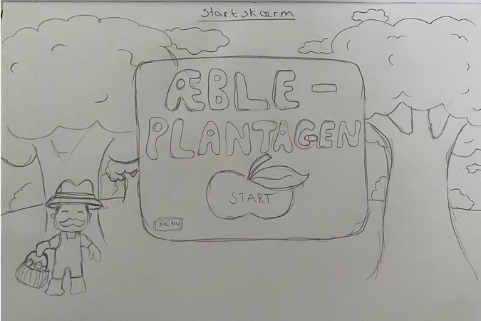
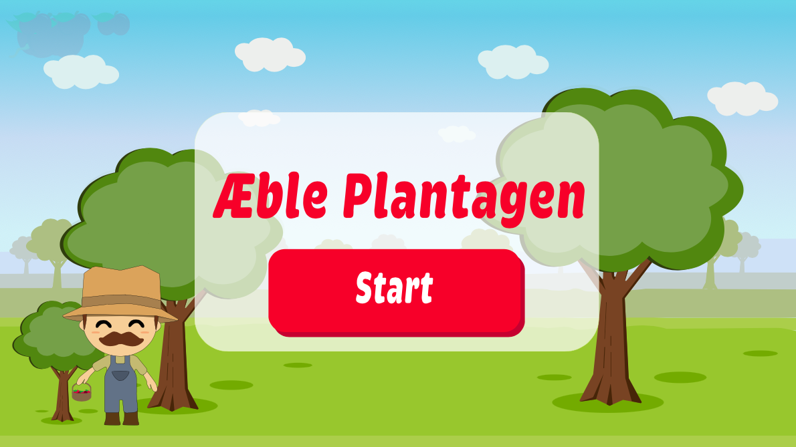
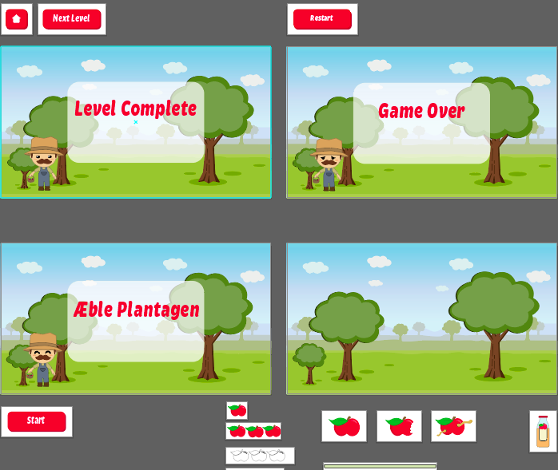
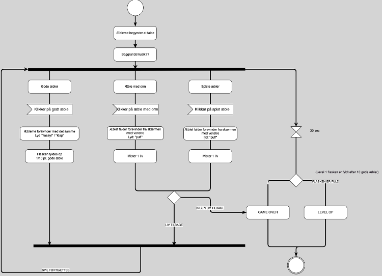

Portfolio
Grundlæggende Animation
I dette tema lærte vi en masse om Javascript, CSS animationer og Adobe Illustrator. Vi havde fokus på formgivning af grafiske elementer, hvor jeg skulle udarbejde et spil.
Temaopgave - Spil
Vi skulle selv designe vores grafiske elementer til vores spil. Vi lærte om skitseringsteknikker, ide-genereringsteknikker, paperprototyper og aktivitetsdiagrammer.
Vi lærte også om forskellige stiles. Jeg valgte at fortsætte med Kawaii stilen, da jeg synes denne stil passede bedst til udtrykket, jeg ville have mit spil skulle udtrykke.
Skitserne blev tegnet i hånden inden vi senere skulle tegne dem rent ved brug af Adobe Illustrator.
  Vi lærte også om aktivitetsdiagrammer, som vi brugte til at skabe vores spil i Javascript
 Spil